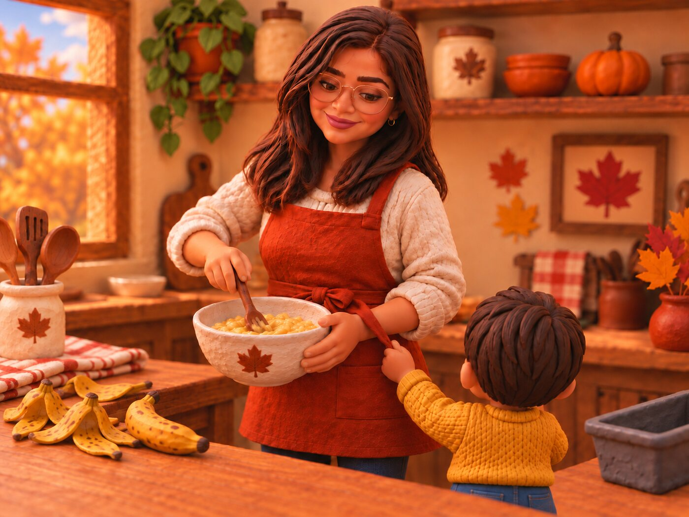
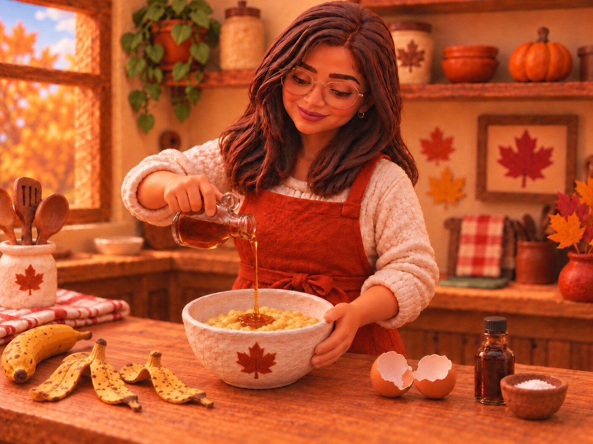
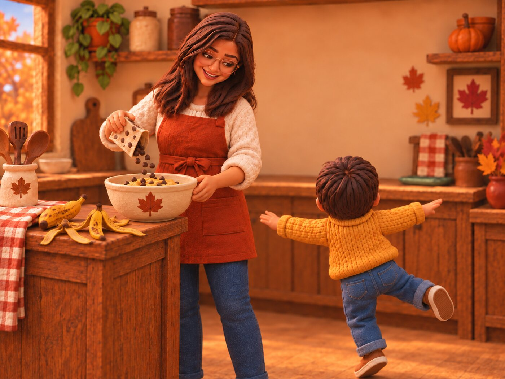
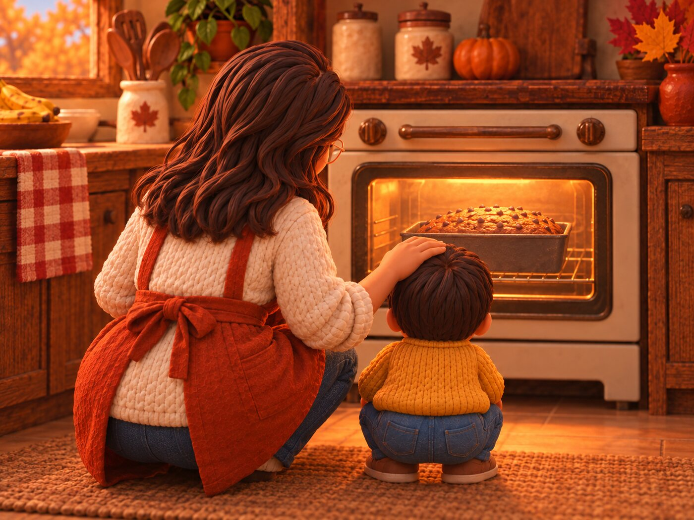
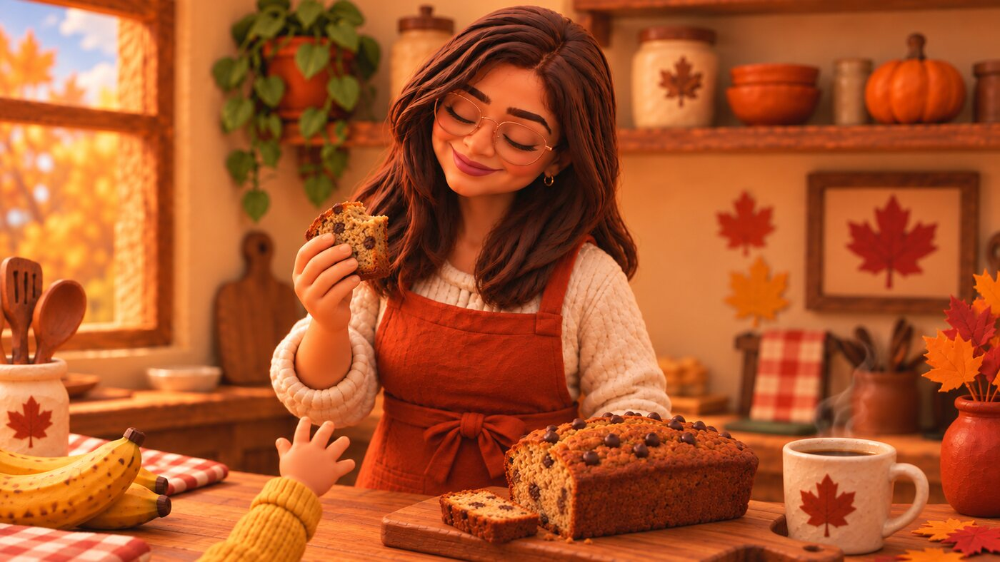

Behind the loaf
How it went
One Saturday, 3 bananas, 1 toddler who wanted up. The banana maple chocolate chip bread, in 6 panels.
Clay version of us.
The crumbs were real.


 Up? Up?
5 minutes.
Up? Up?
5 minutes.I promise.



The clay one took a weekend; the loaf takes an hour. That's the whole story, the recipe is the easy part.
Bake it yourself